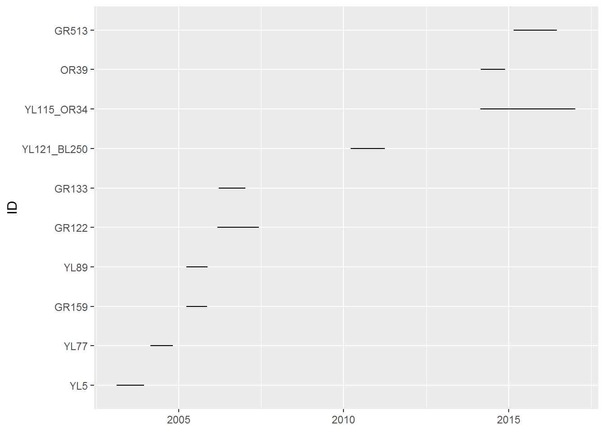
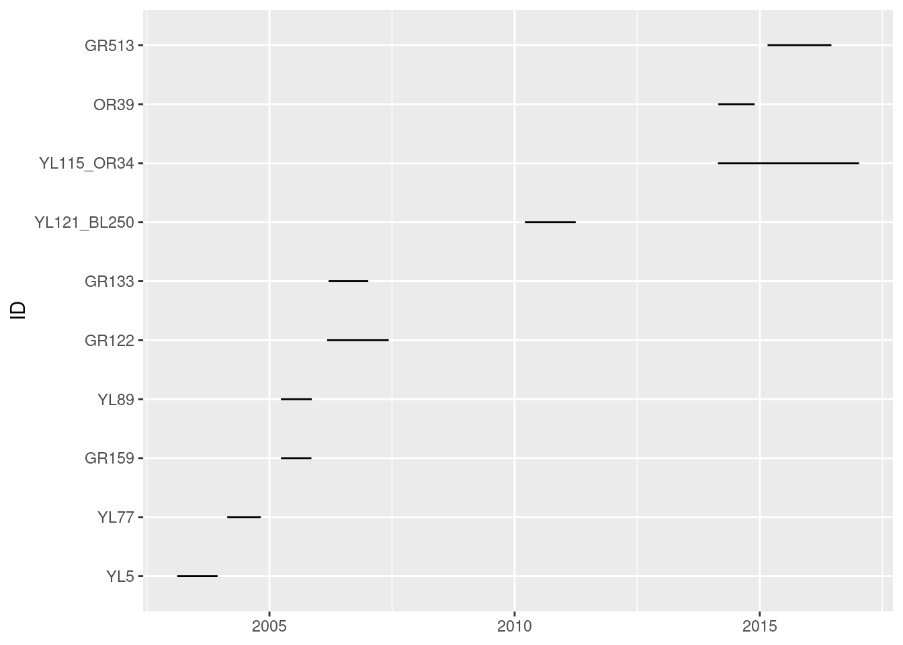
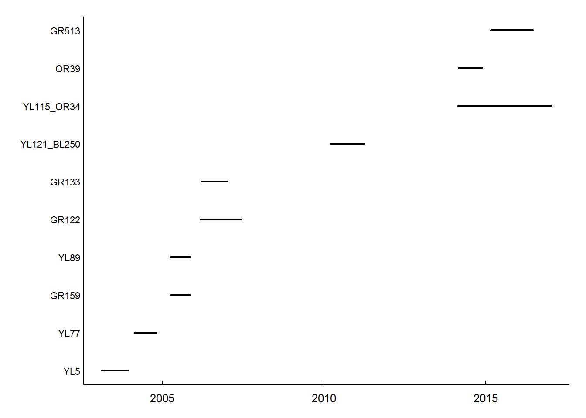
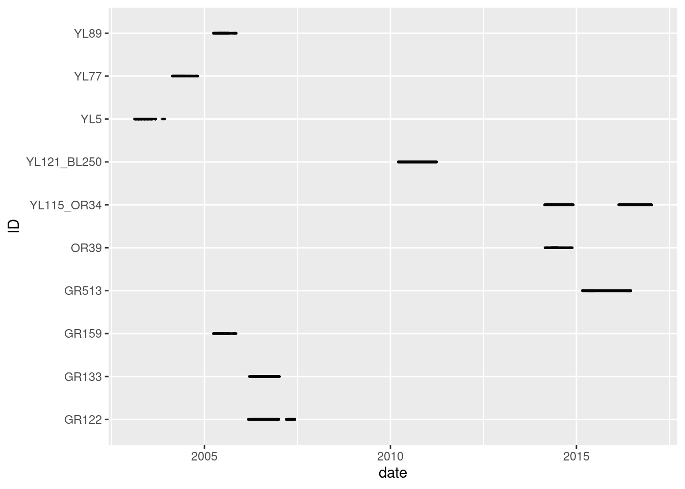
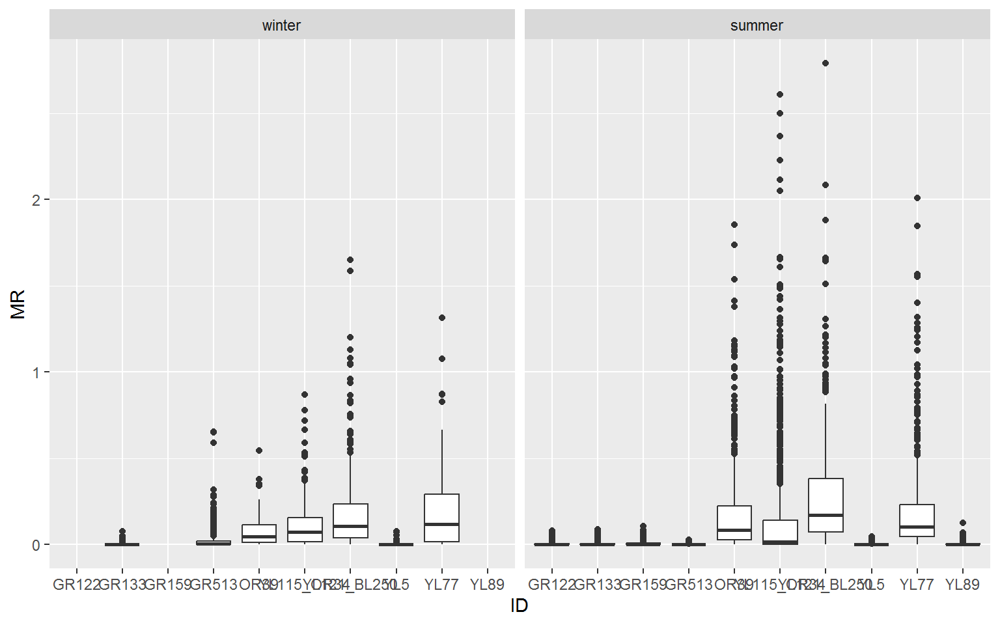
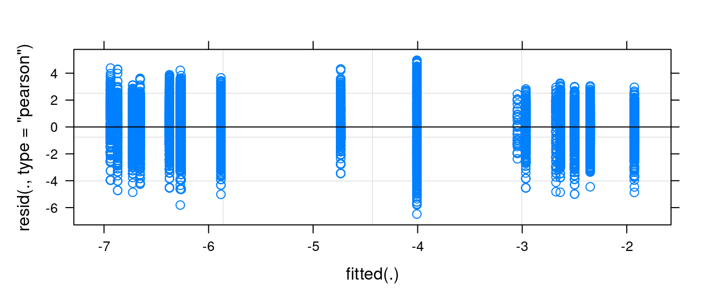

6 Movement data in R
Loading, exploring and processing
This is an tutorial that illustrates some approaches to performing certain programming tasks in R. Always remember, there are many ways to perform similar or identical tasks, and the single best workflow and approach to programming is the one that works best for you!
6.1 Preamble
The goal of this tutorial is to provide the tools to comprehend the structure of certain common types of animal movement data, as well as to load, process and visualize movement data using R in Rstudio.
In particular we will be accessing data from Movebank, a free, online database of animal tracking data, where users can store, process, and share (or not share) location data. In the diverse and highly fragmented world of animal movement ecology, it is the closest to a “standard” format for movement data.
For this tutorial, several packages for downloading, processing and visualizing data are required. We will use: - plyr - dplyr - magrittr - lubridate - move - sf - mapview - ggplot2. Notably, the move package allows you to access and process data from Movebank directly from R.
Install and load these packages, for example via:
6.2 Movebank Data
Here as an example we will use elk (Cervus elaphus1) movement data from the Ya Ha Tinda elk project (Hebblewhite et al. 2020), which are hosted on Movebank (https://www.movebank.org). The dataset that we are using is a subset of the data, and contains GPS locations of 10 female Elk from Banff National Park, in Alberta. You can access the data as a .csv file at this link. But it is worth visiting MoveBank, getting an account, and learning how to navigate the website. For example, you can log in on MoveBank, clicking Data \> Studies, and changing from Studies where I am the Data Manager to All studies, and search “Ya Ha Tinda elk project, Banff National Park, 2001-2020 (females)” . Click on Download > Download data and follow further instructions.
1 A warning: you might load data with the readr::read_csv() function instead of read.csv() - that is the default behavior if you click on a data file in Rstudio for example. This function will convert all of the sex column to the Boolean FALSE - implying that all of these elk are abstinent. This is an example of new and improved versions of software occasionally being a weeee bit too smart for their own good.
6.2.1 Loading movement data in R
If you are working from data on Movebank - including data with controlled or limited access that you have access to - you can load the data with the move::getMovebankData() function [^1: recall, the move:: notation just means that the function comes from the move package] using your own login and password. This is a two step process. First you have to create an object that contains your login information:
require(move)
mylogin <- movebankLogin(username='XXX', password='XXX')Replacing the XXX’s with your private information. Next, you use that login in the getMovebankData function:
elk_move <- getMovebankData(study = "Ya Ha Tinda elk project, Banff National Park, 2001-2020 (females)",
login = mylogin, removeDuplicatedTimestamps=TRUE)This step might take a few minutes, since the data contains more than 1.5 million observations (GPS locations) and it depends on the quality and the speed of your Internet Connection.
(OC?): WOULD BE GOOD TO INCLUDE HERE THE CODE THAT SUBSETS THE MOVEMENT DATA TO THE SUBSET YOU USE BELOW.
6.2.2 Load the data from your computer
If you downloaded the data on your computer, from the website. You can use the read.csv() function to open it on R, using the path of the file on your Disk.
elk_df <- read.csv("data/example_df.csv")6.2.3 Data structure
Now that we loaded the data, we can explore its structure, dimensions, data types, etc. The following functions all provide some important or, at least, useful information:
The “class” of the object is given by looking at the object in the Environment on the right, or the class() or, more informative, is() functions:
When using the getMovebankData() function, the resulting object is a MoveStack. We can use the as.data.frame() (or just data.frame()), to transform it into a data frame and see all the elements of the object. If you loaded the data from your computer, it is a data.frame.
The dimensions (number or rows and columns), by dim().
dim(elk_df)[1] 97825 7The names of the columns with names():
names(elk_df)[1] "ID" "Time" "sex" "Lon" "Lat" "X" "Y" The first few rows with head(), useful for a quick look:
head(elk_df)| ID | Time | sex | Lon | Lat | X | Y |
|---|---|---|---|---|---|---|
| GR122 | 2006-03-06 16:22:41 | f | -115.5828 | 51.75451 | 597820.5 | 5734685 |
| GR122 | 2006-03-06 19:01:07 | f | -115.5830 | 51.75455 | 597806.6 | 5734689 |
| GR122 | 2006-03-06 23:01:48 | f | -115.5865 | 51.73794 | 597600.9 | 5732837 |
| GR122 | 2006-03-07 03:01:46 | f | -115.5774 | 51.73691 | 598231.4 | 5732735 |
| GR122 | 2006-03-07 11:01:46 | f | -115.5828 | 51.75442 | 597820.7 | 5734675 |
| GR122 | 2006-03-07 15:01:05 | f | -115.5828 | 51.75447 | 597820.6 | 5734680 |
Movement data at the very minimum contains x and y (here, columns X and Y) or longitude/latitude (Lon and Lat) coordinates, and an associated timestamp (Time). If there is more than one individual, there will also be a unique identifier (ID). Additional columns might also be provided, as here with the sex of the individual.2
2 A warning: you might load data with the readr::read_csv() function instead of read.csv() - that is the default behavior if you click on a data file in Rstudio for example. This function will convert all of the sex column to the Boolean FALSE - implying that all of these elk are abstinent. This is an example of new and improved versions of software occasionally being a weeee bit too smart for their own good.
More detail about the structure of the data frame is given by str():
str(elk_df)'data.frame': 97825 obs. of 7 variables:
$ ID : chr "GR122" "GR122" "GR122" "GR122" ...
$ Time: chr "2006-03-06 16:22:41" "2006-03-06 19:01:07" "2006-03-06 23:01:48" "2006-03-07 03:01:46" ...
$ sex : chr "f" "f" "f" "f" ...
$ Lon : num -116 -116 -116 -116 -116 ...
$ Lat : num 51.8 51.8 51.7 51.7 51.8 ...
$ X : num 597821 597807 597601 598231 597821 ...
$ Y : num 5734685 5734689 5732837 5732735 5734675 ...We see that all of the variables are character or numeric. For easy manipulation and visualization, it is more convenient if ID and sex are factors. To do so, we can use the mutate function, from the plyr package, which allows to create, delete or modify columns.
6.2.4 Manipulating time
In addition, the characteristic of movement data is that they are spatio-temporal. This means that each GPS location is associated to a Date and Time. In our case, the Time column is a character object. The function as.POSIXct() converts a time column (e.g., considered as a character) into a POSIXct object - a standard computer format for temporal data (see ?as.POSIXct for more information). Note that the Date in R is always in the format Year-Month-Day Hour:Minute:Second (yyyy-mm-dd hh:MM:ss). Similar to transforming our variables in factors, we use the plyr::mutate() function to transform Time into POSIXct format.
elk_df <- elk_df %>% mutate(Time = as.POSIXct(Time, tz = "UTC"))This can also be done with some generally more easy-to-use lubridate package functions. For example: ymd_hms() will convert from this format to POSIX:
elk_df <- elk_df %>% mutate(Time = ymd_hms(Time, tz = "UTC"))whereas if the data were loaded from the original file in some obnoxious format, like the U.S. standard mm/dd/yyyy, this could be converted via:
elk_df <- elk_df %>% mutate(Time = mdy_hms(Time, tz = "UTC"))and so on.
The lubridate also offers useful functions for extracting infromation from POSIX times. For example, the hour of day (hour()), the day of year (yday()), the month (month() or the year (year()). A convenient feature of mutate() is that multiple just commands can be strung together in a single command, for example:
elk_df <- elk_df %>% mutate(doy = yday(Time),
Month = month(Time),
Year = year(Time))
head(elk_df)| ID | Time | sex | Lon | Lat | X | Y | doy | Month | Year |
|---|---|---|---|---|---|---|---|---|---|
| GR122 | 2006-03-06 16:22:41 | f | -115.5828 | 51.75451 | 597820.5 | 5734685 | 65 | 3 | 2006 |
| GR122 | 2006-03-06 19:01:07 | f | -115.5830 | 51.75455 | 597806.6 | 5734689 | 65 | 3 | 2006 |
| GR122 | 2006-03-06 23:01:48 | f | -115.5865 | 51.73794 | 597600.9 | 5732837 | 65 | 3 | 2006 |
| GR122 | 2006-03-07 03:01:46 | f | -115.5774 | 51.73691 | 598231.4 | 5732735 | 66 | 3 | 2006 |
| GR122 | 2006-03-07 11:01:46 | f | -115.5828 | 51.75442 | 597820.7 | 5734675 | 66 | 3 | 2006 |
| GR122 | 2006-03-07 15:01:05 | f | -115.5828 | 51.75447 | 597820.6 | 5734680 | 66 | 3 | 2006 |
Our data set is more or less as we want it. Depending on your research questions, you might have additional variables, and you should make sure that those variables are in the correct format. It is also worth noting that once you know what your raw data set looks like and you know how it should look like before starting processing, all those manipulations (loading the data, redefining the class of the columns, adding new columns) can be done in one line of code:
6.3 Exploring raw movement data
Now that the data set is more manageable, we can explore the data, and especially look at the number of individuals, their sex, the duration of their monitoring, the fix rate, the number of missing data, etc.
However, as movement data is a time series, it is important when manipulating to FIRST order it by Individual and Time. The function arrange from the plyr (or dplyr) package is very handy:
elk_df <- elk_df %>% arrange(ID, Time)Here, we walk through a sequence of some basic questions to be asked of movement data. s
6.3.1 How many individuals are there?
And what are their ID?
6.3.2 How many females/males?
There are several “base” R ways to count the males and females. For example the following three commands all give (essentially) the same output:
unique(elk_df[,c("sex","ID")])
unique(data.frame(elk_df$sex, elk_df$ID))
with(elk_df, unique(data.frame(sex, ID)))| sex | ID | |
|---|---|---|
| 1 | f | GR122 |
| 21568 | f | GR133 |
| 39147 | f | GR159 |
| 45195 | f | GR513 |
| 59780 | f | OR39 |
| 67409 | f | YL115_OR34 |
| 83906 | f | YL121_BL250 |
| 87390 | f | YL5 |
| 90251 | f | YL77 |
| 92890 | f | YL89 |
i.e., a unique combination of sex and ID. An (uninteresting) count of those sexes is given by:
A more trendy approach is to use functions in the dplyr package, which allows you to summarize information per group.
elk_df %>% group_by(ID) %>% summarize(sex = unique(sex))# A tibble: 10 × 2
ID sex
<fct> <fct>
1 GR122 f
2 GR133 f
3 GR159 f
4 GR513 f
5 OR39 f
6 YL115_OR34 f
7 YL121_BL250 f
8 YL5 f
9 YL77 f
10 YL89 f The resulting object is a tibble which is very similar to a data frame, but the preferred output of dplyr manipulations.
6.3.3 How many locations per individual?
To look at the average number of GPS locations per individual and other statistics (e.g., standard deviation), by using the mean(), sd(), and related functions.
But first, we want to make sure that there are no missing locations (missing Longitude or Latitude), in this data set. is,na() checks whether each element is an NA or not, and table() just counts:
FALSE
97825
FALSE
97825 No missing locations! That’s a relief.
Let’s look at the number of locations per individual:
# average number of GPS locations per individual
table(elk_df$ID) %>% mean[1] 9782.5# standard deviation of the number of locations per individual
table(elk_df$ID) %>% sd[1] 7059.185On average, an individual has more than 9000 locations. However, the standard deviation is almost as big, which means that some individuals have a lot of locations and some have fewer locations.
# maximum number of GPS locations per individual
table(elk_df$ID) %>% max[1] 21567# minimum number of GPS locations per individual
table(elk_df$ID) %>% min[1] 2639You can also access (almost) all the statistics by applying the all-purpose summary() function to the table() of the ID. Note that you need to convert it to a data frame first[^1]: [^1] The output of table() in R is actually quite weird.
# summary of the number of GPS locations per individual
table(elk_df$ID) %>% data.frame %>% summary Var1 Freq
GR122 :1 Min. : 2639
GR133 :1 1st Qu.: 3847
GR159 :1 Median : 6838
GR513 :1 Mean : 9782
OR39 :1 3rd Qu.:16019
YL115_OR34:1 Max. :21567
(Other) :4 6.3.4 What is the duration of monitoring?
The functions min(), max() and range() are self-explanatory, but importantly work excellenty with properly formatted time objects. The diff() function calculates differences among subsequent elements of a vector. But for time (POSIX) data, it is best to use the difftime(t1, t2) function since that allows you to specify the units of the time difference (hours, days, etc.) Otherwise, strange things can happen. For example, the overall time span of the monitoring effort is:
The number of seconds is not SO helpful. But difftime is a bit more useful:
Better. That’s a lot of days. More than 10 years. Years is not an option with difftime, but to manipulate the output statistically, you need to convert to numeric. Thus the number of years
That’s a good, long-term dataset!
Anyways, what we really want is to figure this out for each individual. One approach is to use plyr::ddply commands. This function allows you apply functions to different groups (subsets) of a data set. Here’s an example:
| ID | start | end | duration |
|---|---|---|---|
| GR122 | 2006-03-06 16:22:41 | 2007-06-08 07:00:58 | 458.6099 days |
| GR133 | 2006-03-17 18:26:03 | 2007-01-06 23:45:31 | 295.2219 days |
| GR159 | 2005-03-27 16:33:15 | 2005-11-09 13:00:50 | 226.8525 days |
| GR513 | 2015-02-28 01:00:47 | 2016-06-17 10:46:06 | 475.4065 days |
| OR39 | 2014-02-26 01:00:42 | 2014-11-23 15:02:51 | 270.5848 days |
| YL115_OR34 | 2014-02-23 01:01:02 | 2017-01-09 17:00:48 | 1051.6665 days |
The (near) equivalent with dplyr commands - just jumping straight to the duration:
elk_df %>% group_by(ID) %>%
dplyr::summarize(duration = difftime(max(Time), min(Time), units = "days")) # A tibble: 10 × 2
ID duration
<fct> <drtn>
1 GR122 458.6099 days
2 GR133 295.2219 days
3 GR159 226.8525 days
4 GR513 475.4065 days
5 OR39 270.5848 days
6 YL115_OR34 1051.6665 days
7 YL121_BL250 378.1383 days
8 YL5 300.4165 days
9 YL77 250.0837 days
10 YL89 229.8036 daysTo get statistical summaries of these durations, you have to convert the time range object (which is a unique difftime class) into numeric. Thus:
elk_df %>% group_by(ID) %>%
dplyr::summarize(time_range = difftime(max(Time), min(Time), units ="days") %>%
as.numeric) %>% summary ID time_range
GR122 :1 Min. : 226.9
GR133 :1 1st Qu.: 255.2
GR159 :1 Median : 297.8
GR513 :1 Mean : 393.7
OR39 :1 3rd Qu.: 438.5
YL115_OR34:1 Max. :1051.7
(Other) :4 The median duration of monitoring is ~300 days, or a little bit less than a year. Some individual(s) have ~3 years of monitoring, and some only a few days.
We can visualize the monitoring duration for each individual, on a plot, by extracting the start date and the end date of the monitoring for each individual.
Here’s a version using ggplot2
require(ggplot2)
ggplot(n.summary, aes(y = ID, xmin = start, xmax = end)) +
geom_linerange() 
It may make more sense to sort the individuals not alphabetically, but by the time of release. Here’s an approach, which relies on reordering the factor levels of the ID column (an often fussy task):
n.summary <- elk_df %>% group_by(ID) %>%
summarize(start = min(Time), end = max(Time)) %>%
arrange(start) %>%
mutate(ID = factor(ID, levels = as.character(ID)))
ggplot(n.summary, aes(y = ID, xmin = start, xmax = end)) +
geom_linerange() 
This is quick and easy and attractive enough. But, for the record, if you wanted to use base plotting functions (which, for many applications, can be much more easy to customize), code for a similar plot would look something like this:
with(n.summary, {
plot(start, ID, xlim = range(start, end),
type = "n", yaxt = "n", ylab = "", xlab = "")
segments(start, as.integer(ID), end, as.integer(ID), lwd = 2)
mtext(side = 2, at = 1:nrow(n.summary), ID, cex = 0.7, las = 1, line = .2)
})
In any case, on this figure each line represents the duration of the monitoring (x axis) for a given individual (y axis). While we see the beginning and end of the monitoring for each individual, we cannot see if there are any gaps in the monitoring.
To see if there is one or multiple gaps, we can create a vector of Date for each individual (i.e., containing only the date and not the time, to simplify the it and get only get one row per day per individual). To get the date from a time vector, we use the as.Date function. We then use the slice() command to keep only row per day for each individual. Do not forget to arrange per ID and date as all these manipulation can sometimes mess up the ordering of your data.
dates <- elk_df %>% mutate(date = as.Date(Time)) %>%
group_by(ID, date) %>%
slice() %>% arrange(ID, date) ggplot(dates, aes(y = ID, x = date)) +
geom_point(shape = 20, size = .5, alpha = .1) 
Similar to the previous figure, each line represent the monitoring dates for a given individual. But from this figure, we can see that there are some gaps in the monitoring of some individuals.
6.3.5 What is the fix rate?
The fix rate, or the time lag between successive locations, can be extracted by using the difftime() function on the Time column. Again, this function needs to be applied to each individual separately. Here, we are subsetting the data set per ID, and applying a function which is adding a column difftime to each subset. Note that since the vector of time difference is smaller than the vector of time, we add a missing value at the beginning of each vector, for each value to represent the difference in time to the previous location.
| ID | Time | sex | Lon | Lat | X | Y | doy | Month | Year |
|---|---|---|---|---|---|---|---|---|---|
| GR122 | 2006-03-06 16:22:41 | f | -115.5828 | 51.75451 | 597820.5 | 5734685 | 65 | 3 | 2006 |
| GR122 | 2006-03-06 19:01:07 | f | -115.5830 | 51.75455 | 597806.6 | 5734689 | 65 | 3 | 2006 |
| GR122 | 2006-03-06 23:01:48 | f | -115.5865 | 51.73794 | 597600.9 | 5732837 | 65 | 3 | 2006 |
| GR122 | 2006-03-07 03:01:46 | f | -115.5774 | 51.73691 | 598231.4 | 5732735 | 66 | 3 | 2006 |
| GR122 | 2006-03-07 11:01:46 | f | -115.5828 | 51.75442 | 597820.7 | 5734675 | 66 | 3 | 2006 |
| GR122 | 2006-03-07 15:01:05 | f | -115.5828 | 51.75447 | 597820.6 | 5734680 | 66 | 3 | 2006 |
What are the statistics (min, max, mean, median, …) of this fix rate?
elk_df$dtime %>% summaryLength Class Mode
0 NULL NULL On average, the fix rate is ~1 hour (median is 15 minutes). The smallest one is 1 second and the biggest is a little more than a year (10664 hours ~ 178 days). This one probably comes from an animal that has been captured and equipped once, then recaptured a year after the end of the monitoring. Understanding the sources of these gaps underscores the importance of having a relationship with those people that actually collected the data, to understand their monitoring strategy and structure of the data, and understand how to process the data depending on your research questions.
6.4 Processing data
The previous section illustrated a few typical approaches to exploring a movement dataset. Processing the data - broadly speaking - implies that we will be organizing it, filtering it, or adding information to the data frame in ways that contributes in a meaningful way to some key research question. By that definition, for example, the inclusion of the individual specific fix rate above is a key bit of data processing.
As an example, we might investigate the following question: Is there a difference in movement rates between winter and summer, for female elk?
6.4.1 Subsetting by season
To answer this question, we need to focus on movement data of female elk during winter and summer only. Let’s say (arbitrarily) that winter is only January and February, and summer is just July and August. We can use month() to subset the data accordingly.
To add a column “season”, we can use the ifelse(), function which returns different values depending on whether a given element in a vector satisfies a condition.
elk_winter_summer <- elk_winter_summer %>%
mutate(season = ifelse(Month < 3, "Winter", "Summer"))
table(elk_winter_summer$season)
Summer Winter
29959 2306 You could also perform this operation with a vector of days of year and the useful cut() function, which transforms numeric data to ordered factors. Thus, to obtain breaks:
season.dates <- c(winter.start = yday("2023-01-01"),
winter.end = yday("2023-02-28"),
summer.start = yday("2023-07-01"),
summer.end = yday("2023-08-31"))
season.dateswinter.start winter.end summer.start summer.end
1 59 182 243 6.4.2 Estimating movement rate
To estimate the movement rate between subsequent steps for each individual and each season, we will use what we learned in chapter Chapter 5.
- Create a Z vector combining the X and Y coordinates
- Calculate the step lengths (SL)
- Calculate the time difference of the steps
- Calculate step’s movement rate
As we need to do this for each individual, year and season separately, we will use the ddply(), as before. Note, that to do this most effectively, it is nice to write our own function that makes all the computations we need. The key in this function is that the movement rate (MR) is the step length divided by the time difference, converted ti km/hour. Here’s one such function:
getMoveStats <- function(df){
# df - is a generic data frame that will contain X,Y and Time columns
Z <- df$X + 1i*df$Y
Time <- df$Time
Step <- c(NA, diff(Z)) # we add the extra NA because there is no step to the first location
dT <- c(NA, difftime(Time[-1], Time[-length(Time)], hours) %>% as.numeric)
SL <- Mod(Step)/1e3 # convert to km - so the speed is in km/hour
MR <- SL/dT # computing the movement rate
# this is what the function returns
data.frame(df, Z, dT, Step, SL, MR)
}We took care to pick this function apart into individual pieces. And understand that it returns a new data frame with the additional columns appended to the original data frame. THe ddply command will apply this function to every individual in every season in every year. This is now very quick:
| ID | Time | sex | Lon | Lat | X | Y | doy | Month | Year | season | Z | dT | Step | SL | MR |
|---|---|---|---|---|---|---|---|---|---|---|---|---|---|---|---|
| GR122 | 2006-07-02 00:00:19 | f | -115.5844 | 51.68669 | 597856.4 | 5727141 | 183 | 7 | 2006 | summer | 597856+5727141i | NA | NA | NA | NA |
| GR122 | 2006-07-02 00:15:17 | f | -115.5841 | 51.68658 | 597877.4 | 5727129 | 183 | 7 | 2006 | summer | 597877+5727129i | 14.96667 | 20.9744-11.830i | 0.0240806 | 0.0016089 |
| GR122 | 2006-07-02 00:30:16 | f | -115.5836 | 51.68594 | 597913.3 | 5727058 | 183 | 7 | 2006 | summer | 597913+5727058i | 14.98333 | 35.9429-70.504i | 0.0791373 | 0.0052817 |
| GR122 | 2006-07-02 00:45:16 | f | -115.5828 | 51.68509 | 597970.4 | 5726965 | 183 | 7 | 2006 | summer | 597970+5726965i | 15.00000 | 57.1349-93.454i | 0.1095356 | 0.0073024 |
| GR122 | 2006-07-02 01:00:48 | f | -115.5822 | 51.68451 | 598013.2 | 5726901 | 183 | 7 | 2006 | summer | 598013+5726901i | 15.53333 | 42.7284-63.696i | 0.0767000 | 0.0049378 |
| GR122 | 2006-07-02 02:00:28 | f | -115.5820 | 51.68433 | 598027.4 | 5726881 | 183 | 7 | 2006 | summer | 598027+5726881i | 59.66667 | 14.2142-19.749i | 0.0243324 | 0.0004078 |
6.4.3 Quick analysis of movement rates
We are ready now (finally) to answer the question: Is there a difference in movement rate between winter and summer? We can start with a quick boxplot of the movement rates against individual ID’s and season. The distributions are highly skewed and quite variable, with some animals really on the move, and some spending a lot of time not moving at all.
ggplot(elk_winter_summer, aes(ID, MR)) + geom_boxplot() + facet_wrap(.~season)
Some season & individual summary stats:
mr_summarystats %>% kable| ID | season | min | max | n | NA.count | Zero.count |
|---|---|---|---|---|---|---|
| GR122 | summer | 0.0000000 | 0.0827437 | 3806 | 1 | 96 |
| GR133 | winter | 0.0000000 | 0.0777082 | 314 | 1 | 10 |
| GR133 | summer | 0.0000000 | 0.0871294 | 3782 | 1 | 44 |
| GR159 | summer | 0.0000000 | 0.1078212 | 3012 | 1 | 21 |
| GR513 | winter | 0.0000000 | 0.6543712 | 677 | 2 | 10 |
| GR513 | summer | 0.0000093 | 0.0271023 | 711 | 1 | 0 |
| OR39 | winter | 0.0000000 | 0.5450862 | 35 | 1 | 1 |
| OR39 | summer | 0.0005555 | 1.8531111 | 572 | 1 | 0 |
| YL115_OR34 | winter | 0.0000000 | 0.8679974 | 270 | 3 | 1 |
| YL115_OR34 | summer | 0.0000000 | 2.6096342 | 1279 | 2 | 2 |
| YL121_BL250 | winter | 0.0000000 | 1.6492821 | 539 | 1 | 1 |
| YL121_BL250 | summer | 0.0011136 | 2.7874279 | 541 | 1 | 0 |
| YL5 | winter | 0.0000000 | 0.0761834 | 251 | 1 | 3 |
| YL5 | summer | 0.0000183 | 0.0480011 | 515 | 1 | 0 |
| YL77 | winter | 0.0005551 | 1.3129208 | 90 | 1 | 0 |
| YL77 | summer | 0.0011128 | 2.0078617 | 622 | 1 | 0 |
| YL89 | summer | 0.0000000 | 0.1279309 | 2372 | 1 | 14 |
Note there are lot of 0’s in the data, which is rather remarkable considering the relative imprecision of GPS data - certainly high enough to show variation at the 1 meter scale. This is an evident red flag … one might be inclined to simply remove those data entirely.
Without going into too much detail of the statistical analysis of these data, the most appropriate statistical test would use a linear mixed effects model with individuals as random effects, and look something like this:
Perhaps surprisingly, movement rates are slightly lower in the summer - but not with meaningful statistical significance (|\(t\) value| < 1).
Note, the residuals are quite well-behaved with the log-transformation.
plot(fit)